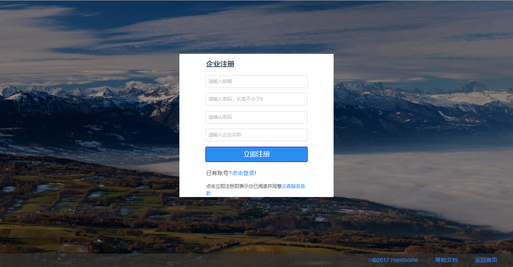
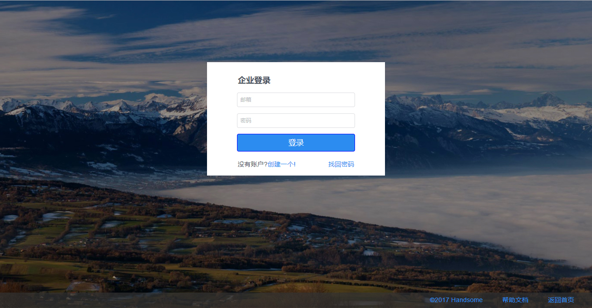
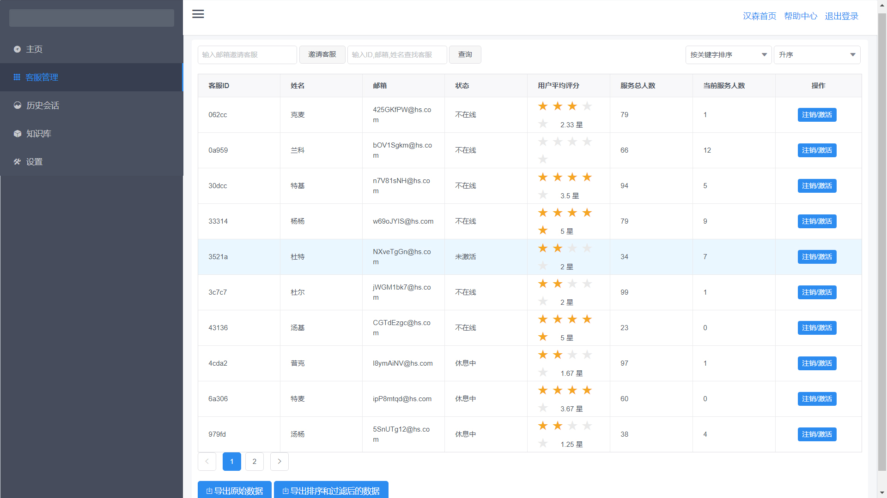
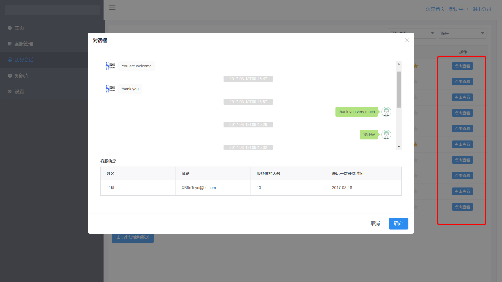
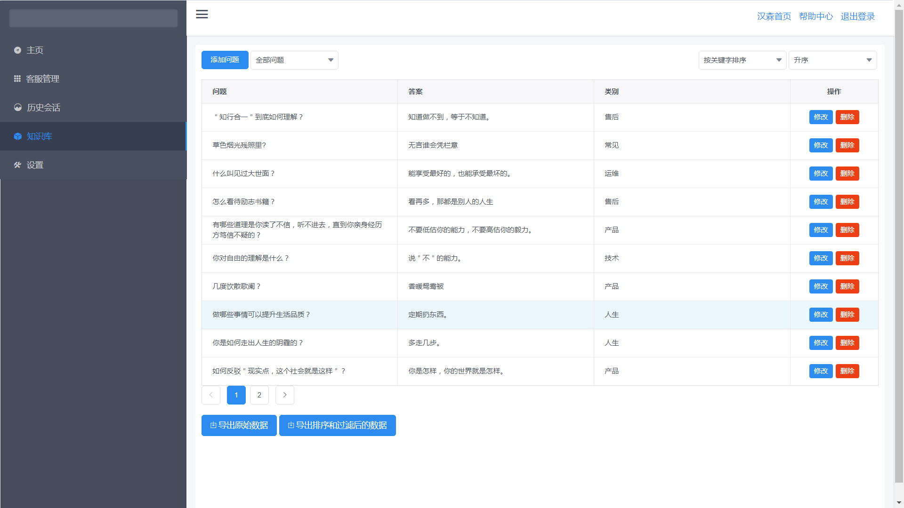
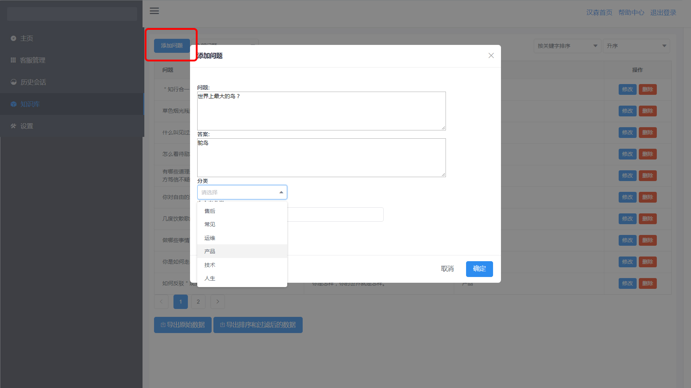
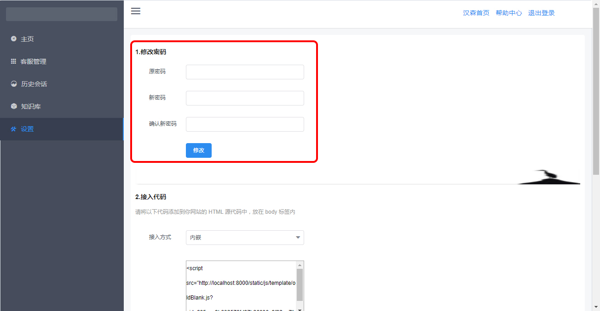
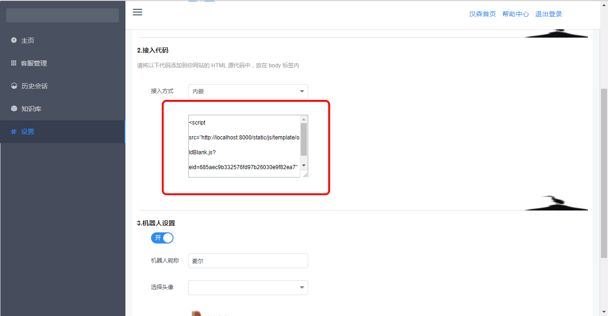
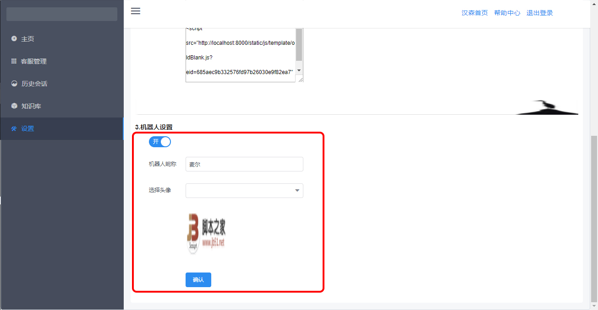

注册和登录
1.注册
在handsome首页点击“企业注册/登录”，进入企业注册页面进行企业账户注册。
2.登录
用已注册的邮箱进行登录，忘记密码时点击找回密码即可。
主页
主页展现当前的系统概况，为监控人员、管理人员提供当前客服整体的一个概况，主要提供反应客服情况的主要数据，其中包含总服务时间、总消息数、总会话数、总服务人数、在线客服数、今日会话数、平均会话时长、会话平均消息数的可视化数据，并支持以统计图的方式对过去24小时的消息数统计。
1.查看统计
在选择框中选择希望的统计图方式即可查看，支持显示柱形图、折线图，并可以导出统计信息。

客服管理
客服管理界面提供管理客服的相应功能，包括邀请客服、查看客服列表、查看用户对客服的平均评分、注销/激活客服、查看客服信息、显示在线状态、查看客服与哪些用户聊过天，并支持对结果进行关键字排序：支持按照状态、服务总人数、当前服务人数排序；支持升序、降序两种排序方式。
1.邀请客服
在邀请框中输入客服邮箱，点击“邀请客服”即可。
2.查找客服
在查询框中输入客服ID/邮箱/姓名，点击“查询”即可。
3.列表排序
在排序下拉列表内选择关键字和排序方式：支持按照状态、服务总人数、当前服务人数排序；支持升序、降序两种排序方式。
4.注销/激活客服
在客服列表中可查看客服信息和状态、服务情况，在操作栏可以对客服进行注销或激活。
4.导出数据
可以选择导出原始数据、导出排序和过滤后的数据。

历史会话
历史会话页面显示所有历史会话，并支持点击查看某一会话的聊天内容
1.导出数据
点击“导出原始数据”可导出历史会话数据。
2.查看聊天内容
在操作栏点击按钮“点击查看”即可查看所选会话的聊天内容。
知识库
知识库提供对智能机器人知识库的相应设置，包括添加、删除知识库问题、设置相应回答，并支持按问题类别进行分类和筛选。
1.添加问题
点击页面中的“添加”按钮即可添加问题、设置回答及分类。
2.修改/删除问题
点击问题列表操作栏中的“修改”按钮可修改问题：支持修改问题内容、回答内容和问题类型；点击“删除”按钮可删除问题。
设置
设置页面提供对企业信息的设置，包括修改密码、接入网站并设置接入方式、设置机器人。
1.修改密码
在修改密码栏输入原密码和新密码后点击“修改”即可
2.设置接入方式
在选择框内选择希望的接入方式，支持内嵌、弹出新窗口。
3.接入网站
注册账号后，会获取一段专属的代码，直接复制到企业网站HTML的源代码中；如果忽略了，在设置页面也可以再次找到。
4.设置机器人
企业可以选择是否开启机器人，如不开启则直接进入人工客服进行服务。机器人设置支持设置机器人的昵称和头像，设置后点击“确认”以保存设置。
